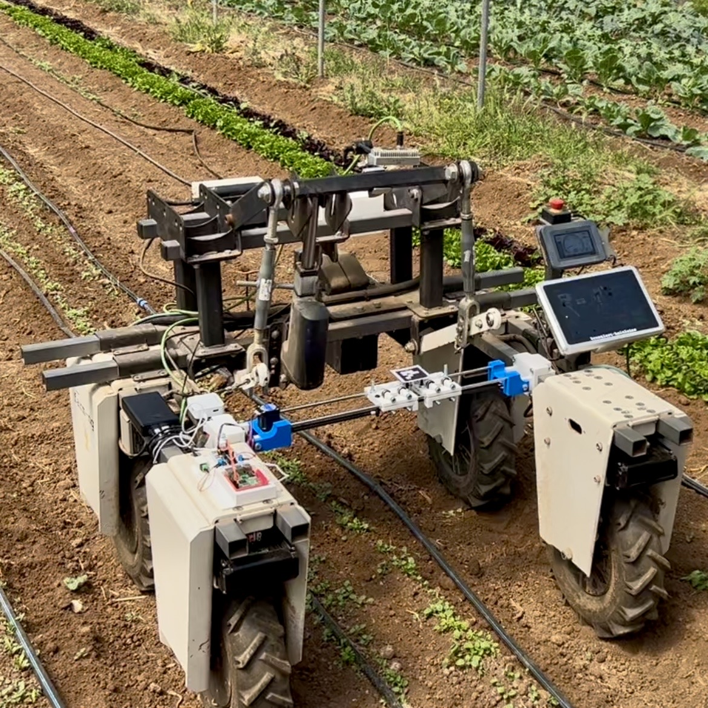

01Autonomous Farming Robot — Amiga Platform
Placeholder: Brief summary of the project. What problem did it solve? What was your role? Keep it to 1–2 sentences.
View Case Study →Robotics & Controls Engineering Student
I build systems that move, sense, and decide — from embedded controllers to autonomous field robots.

01Placeholder: Brief summary of the project. What problem did it solve? What was your role? Keep it to 1–2 sentences.
View Case Study → 02
02
Placeholder: Brief summary. What computer vision problem were you solving? What algorithm or pipeline did you build?
View Case Study → 03
03
Placeholder: Brief summary. Describe the control architecture, what the system actuates, and the outcome.
View Case Study → 04
04
Placeholder: What sensors did you use? What did the scanner detect or map? What microcontroller platform?
View Case Study →Placeholder: Describe the engineering problem or challenge this project addressed. What was the gap or need?
Placeholder: Describe your specific contribution. Were you working alone, or on a team? What were you responsible for?
Placeholder: Describe the architecture, algorithms, or design choices you made. Why did you choose this approach over alternatives?
Placeholder: Describe the outcome. Did it work? By how much? Include any measurements, benchmarks, or demo results.
Placeholder: What detection challenge existed? What were the environmental constraints (lighting, crop type, camera angle)?
Placeholder: Your specific contribution — algorithm design, data collection, integration, testing?
Placeholder: How does your RANSAC pipeline work? What preprocessing steps? How do you handle outliers or edge cases?
Placeholder: Detection accuracy, frame rate, robustness under different conditions. Any comparison to a baseline?
Placeholder: What physical or control problem needed solving? What constraints did the weeder mechanism impose?
Placeholder: Did you design the controller, write firmware, build the electrical system, or all of the above?
Placeholder: Control loop design, communication protocol (CAN, serial, etc.), state machine, safety logic — describe the architecture.
Placeholder: Did the system perform reliably in field testing? Latency, accuracy, weed removal rate, uptime, etc.
Placeholder: What did this scanner need to detect or map? What were the constraints (size, power, real-time requirements)?
Placeholder: Hardware selection, firmware, data pipeline, visualization — what was your specific scope?
Placeholder: Sensor fusion strategy, MCU architecture, communication interfaces, data processing pipeline.
Placeholder: Range, accuracy, scan rate, power consumption, or any other relevant metrics. What worked well and what didn't?
Relevant coursework: Mechatronics, Dynamical Systems, Robot Dynamics, Sensing and Sensor Technologies
Relevant coursework: Optimal Control, Kalman Filtering, Applied Feeback Control
Placeholder: One or two sentences about what you built or contributed.
Placeholder: One or two sentences about what you built or contributed.
Open to internship and research opportunities in robotics, controls, and embedded systems.